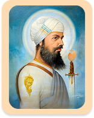

੩੫੦ ਸਾਲਾਂ ਸ਼ਹੀਦੀ ਵਿਰਾਸਤ:
ਹਿੰਦ ਦੀ ਚਾਦਰ
ਇਤਿਹਾਸ

੧. ਪ੍ਰਕਾਸ਼ ਅਤੇ ਬਾਲ ਅਵਸਥਾ
੨. ਅਨੰਦ ਕਾਰਜ (ਵਿਆਹ)
੩. ਗੁਰੂ ਲਾਧੋ ਰੇ
੪. ਸ੍ਰੀ ਅੰਮ੍ਰਿਤਸਰ ਦੀ ਯਾਤਰਾ
੫. ਮਾਲਵੇ ਤੇ ਬਾਂਗਰ ਦੇਸ਼ ਦਾ ਪ੍ਰਚਾਰ ਦੌਰਾ
੬. ਪੂਰਬ ਦੀ ਯਾਤਰਾ
੭. ਕਸ਼ਮੀਰੀ ਪੰਡਿਤਾਂ ਦੀ ਫਰਿਆਦ
੮. ਗ੍ਰਿਫ਼ਤਾਰੀ
੯. ਗੁਰਸਿੱਖਾਂ ਦੀ ਸ਼ਹੀਦੀ
੧੦. ਸ੍ਰੀ ਗੁਰੂ ਤੇਗ ਬਹਾਦਰ ਸਾਹਿਬ ਜੀ ਦੀ ਸ਼ਹਾਦਤ
੧੧. ਸੀਸ ਦਾ ਅਨੰਦਪੁਰ ਸਾਹਿਬ ਪੁੱਜਣਾ